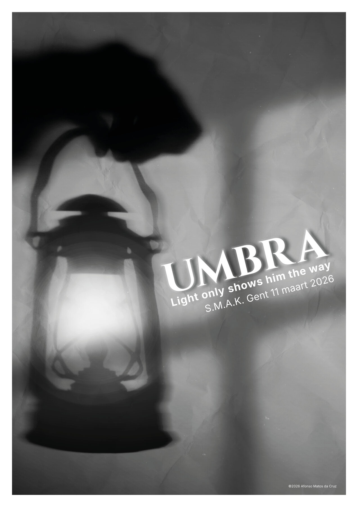
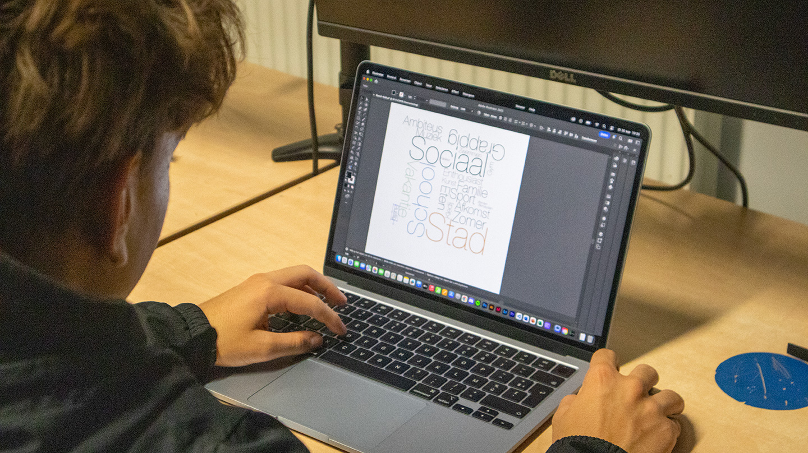

AFONSO MATOS DA CRUZ
Projecten

Wie ik ben

Design dat iets
zegt.
Ik ben Afonso Matos da Cruz — grafisch ontwerper vanuit Gent met een scherp oog voor typografie, editorial design en visuele identiteit. Elk ontwerp heeft iets te zeggen, en de manier waarop het dat zegt is minstens zo belangrijk als de boodschap zelf.
Momenteel in opleiding Grafische Technieken (4D A-GT) aan Don Bosco Sint-Denijs-Westrem. Naast schoolprojecten werk ik aan persoonlijke werken en bouw ik aan Rich Minds.
Don Bosco SDW, Gent
Design dat alleen mooi is, is incompleet. Elk visueel besluit verdient een reden.
Lettertype, witruimte en hiërarchie vormen de structuur van elke communicatie.
Minder keuzes, scherpere intenties. Witruimte is een designbeslissing, geen tekort.
Overige Werken
Experimentele posters, persoonlijke projecten en grafische werken buiten de grote projecten.
Oog voor het beeld
Straat.
Architectuur.
Moment.
Naast grafisch ontwerp fotografeer ik — straatfotografie, architectuur, portret. Op zoek naar de spanning tussen licht, compositie en het vluchtige moment.
Film: een kortfilm als visueel experiment.

Samenwerken
Laten we
iets maken
dat telt.
Beschikbaar voor stage, freelance en creatieve samenwerkingen.